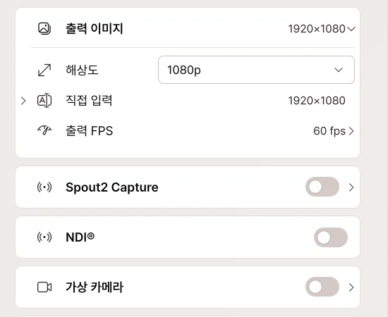
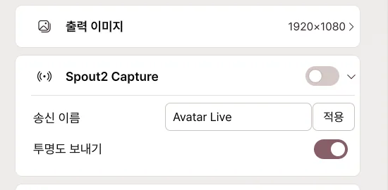
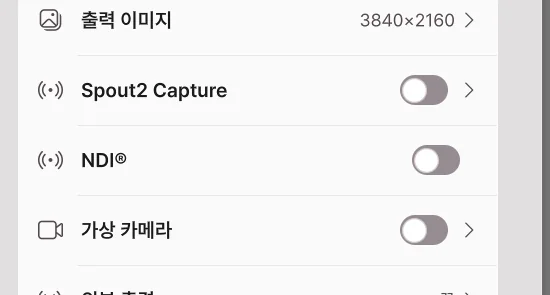
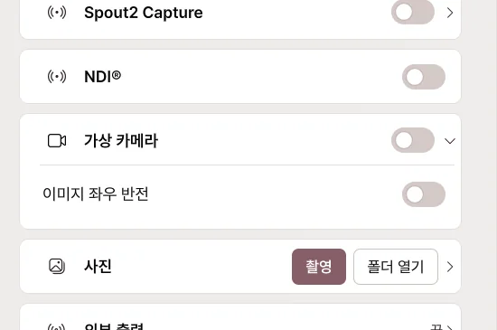

출력
완성한 아바타 화면을 OBS·Discord·Zoom으로 보내거나 사진·영상으로 저장합니다.
어떤 방식을 쓰면 되나요?
| 원하는 것 | 사용할 기능 |
|---|---|
| 이 PC의 OBS에 투명 아바타 넣기 | Spout2 |
| 다른 PC로 영상 보내기 | NDI® |
| 화상 통화의 카메라로 표시하기 | 가상 카메라 |
| 게임과 아바타를 함께 공유하기 | 화면 공유 |
| 친구의 아바타와 함께 방송하기 | 원격 합방 (방송 → 연결) |
| 사진·동영상 파일 만들기 | 사진 및 녹화 (스튜디오 → 사진 및 녹화) |
NDI®는 Vizrt NDI AB의 등록 상표입니다. NDI 공식 안내
송출
출력 이미지

| 항목 | 바꾸면 |
|---|---|
| 해상도 | 높이면 더 선명하고 PC 부담이 커집니다. |
| FPS | 높이면 움직임이 더 매끄럽고 PC·네트워크 부담이 커집니다. |
| 화면 비율 | 가로·세로 등 송출 화면의 모양을 바꿉니다. |
| 송출 대상 | 작업용 씬 뷰 또는 선택한 스튜디오 카메라의 영상을 보냅니다. |
Basic은 최대 1080p와 워터마크, Pro는 최대 4K와 워터마크 없는 출력을 지원합니다.
Spout2
같은 Windows PC에서 Avatar Live의 영상을 OBS로 전달합니다.

- OBS를 종료하고 OBS Spout2 플러그인을 설치합니다.
- OBS를 다시 실행합니다.
- Avatar Live의 출력 → 송출 → Spout2를 켭니다.
- OBS의 소스 → + → Spout2 Capture에서 Avatar Live를 선택합니다.
- 투명 배경을 쓰려면 스튜디오 → 배경 → 투명을 고르고, OBS에서 Composite with alpha를 켭니다.
| 항목 | 하는 일 |
|---|---|
| Spout2 스위치 | 영상을 보내거나 멈춥니다. |
| 송신 이름 | OBS 소스 목록에 보이는 이름입니다. |
| 적용 | 바꾼 송신 이름을 확정합니다. OBS에서도 새 이름을 다시 고르세요. |
| 알파 보내기 | 배경 투명도를 함께 보냅니다. |
Spout2와 OBS 수신 플러그인의 이용 조건은 Spout2 고지를 따릅니다.
NDI
네트워크로 다른 PC의 OBS 등에 영상을 보냅니다. Basic과 Pro 모두 지원합니다.

- 수신 PC의 OBS를 종료합니다.
- DistroAV와 해당 버전에서 요구하는 NDI Runtime을 설치합니다.
- Avatar Live에서 출력 → 송출 → NDI를 켭니다.
- 수신 OBS의 소스 → + → NDI Source에서 Avatar Live를 선택합니다.
OBS 없이 확인하려면 NDI Tools의 Studio Monitor를 사용할 수 있습니다. 송신 PC와 수신 PC가 서로 통신할 수 있는 네트워크여야 합니다.
NDI Runtime·NDI Tools·DistroAV의 이용 조건은 NDI 고지에서 각각 확인하세요.
가상 카메라
Discord·Zoom 등의 카메라 목록에서 아바타를 고르는 방식입니다.

- 가상 카메라 설치로 장치를 등록합니다. Windows 관리자 승인이 필요합니다.
- 가상 카메라 스위치를 켭니다.
- 사용할 앱의 카메라 목록에서 Avatar Live Camera를 고릅니다.
최대 1920×1080, 30fps이며 투명 배경은 전달하지 않습니다. 새 장치가 목록에 없으면 받는 앱을 다시 실행하세요.
화면 공유
게임이나 프로그램 위에 아바타를 겹쳐 Discord 등으로 보냅니다.

- 출력 → 화면 공유를 엽니다.
- 게임 또는 디스플레이를 고르고 공유할 대상을 선택합니다.
- 아바타의 위치와 크기를 맞춘 뒤 화면 공유를 켭니다.
- Discord의 화면 공유 → 애플리케이션에서 Avatar Live Share Output을 선택합니다.
| 조절 | 달라지는 것 |
|---|---|
| 아바타 위치·크기 | 게임 위에 놓이는 아바타의 자리와 크기를 바꿉니다. |
| 오디오 대상 | 게임·데스크톱·선택한 앱 중 공유할 소리를 고릅니다. |
| 앱 볼륨 | 공유받는 쪽의 소리 크기를 바꿉니다. 0%는 음소거, 100%는 원래 크기입니다. |
| 추가 소스 (Pro) | 다른 창이나 모니터를 더 겹칩니다. 목록 위쪽 소스가 앞에 표시됩니다. |
공유 소리가 안 나올 때
가상 오디오 장치가 없다는 안내가 나오면 가상 오디오 드라이버 설치를 사용할 수 있습니다. 이 버튼은 VB-Audio의 VB-CABLE을 설치하는 경로입니다. 설치 후 Windows 기본 재생 장치가 평소 쓰는 헤드폰·스피커인지 확인하세요.
VB-CABLE은 별도 제작사의 Donationware입니다. 사용 조건과 후원·라이선스 안내는 VB-CABLE 고지에서 확인하세요.